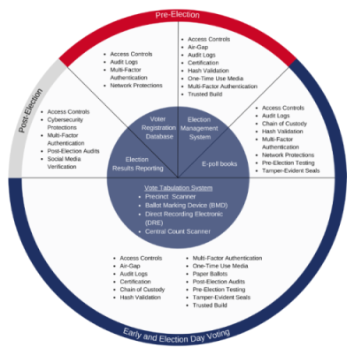

In this edition of the newsletter, learn about recent U.S. Election Assistance Commission (EAC) events, new resources, best practices for election technology, and other helpful information for election officials.
Roundup of recent EAC events
Thank you for making Help America Vote Day a success!

State and local election officials from over 40 states joined organizations and individuals from across the country to make Help America Vote Day a successful effort to recruit poll workers!
In addition to #HelpAmericaVote, many, including celebrities, used #PollWorkerRecruitmentDay to spread the word about the need for people to step up and sign up to help during early voting and on Election Day. The EAC knows recruitment efforts are ongoing. Toolkits and graphics for Help America Vote Day and National Poll Worker Recruitment Day are still available at helpamericavote.gov and eac.gov/toolkits.
Pepperdine HAVA at 20 Event
The Help America Vote Act will be 20 years old on October 29! In celebration and taking stock of the current state and future of elections, the EAC and Pepperdine University School of Public Policy held “HAVA at 20: Building Trust in Elections.” The event included a series of panels covering confidence in elections, security and technology in elections, current issues in election administration, and the future of elections. The panels were moderated by the EAC commissioners and featured election officials and subject matter experts from across the country.

“Confidence in Elections” discussed how mis- and dis-information has created a public distrust in election processes, and what can be done to address these challenges. “Security and Technology in Elections” discussed how technology has transformed election processes and how to keep the infrastructure secure. “Current Issues in Election Administration” discussed issues in election funding and resources, as well as additional challenges. “Future of Elections” discussed how HAVA is still relevant, despite having been implemented 20 years ago, and how elections will continue to evolve.
The keynote remarks from Senators Amy Klobuchar (D-MN) and Roy Blunt (R-MO) are available to watch here on the EAC’s YouTube channel.
The recording of the full event is available to watch here.

The Latest Election Resources
Best Practices for Election Technology
Technology is a critical part of elections that requires careful attention to security to maintain the integrity of the entire voting process. Election officials must develop and follow procedures to ensure the security of all components of the election process—from voter registration through final results certification. The EAC’s new Election Technology Security webpage has a set of best practices highlighting security features that are essential for protecting election technology. The page also includes an interactive graph with a complete list of security measures, organized by equipment type. Election officials are encouraged to download and use the icons used in the best practices document to help communicate how they secure elections and voting systems at the local level. All icons used in the best practices guide are available as a zip file here.

Best Practices: Accessibility for Voting By Mail
What are the best ways to ensure voters with disabilities, many of whom rely on voting by mail to cast their ballots, have access? This new EAC resource highlights the primary barriers to voting by mail and provides best practices to help ensure voters with disabilities have equal access to this crucial voting option. Election officials, policymakers, and advocates can use this guide's checklists and best practices to better serve this community of voters.
Election Processes Simulations Videos
Election officials are often faced with difficult decisions including whether or how to consolidate polling locations, how to minimize long lines, or how to handle an unexpected shutdown of services. The EAC partnered with the University of Rhode Island to conduct a series of simulations that allow election officials to explore the relationship between elements of Election Day administration and these common issues that officials face at voting locations. This video series allows election officials to learn from the results of thousands of simulations of the voting experience. It provides visual interpretations of voting locations, equipment, the people involved, and how different strategies may work in practice at a voting location, all with a goal of increasing efficiencies and minimizing wait times for voters. The simulations in this series address how officials can approach the consolidation of polling locations. Scenarios including a complete or partial consolidation are considered, with important information on resource allocation in each scenario.
Learn more and watch the first videos in the Election Processes Simulations series here
More simulations will be added to this page in the coming months addressing other important topics.
CISA Toolkit
Cybersecurity continues to be an important factor in election management. The Cybersecurity and Infrastructure Security Agency (CISA) released this toolkit as a quick-reference catalog of free services and tools available for state and local election officials to improve the cybersecurity and resilience of their infrastructure. The topics covered include risk assessment, tools relating to protecting aspects of the voting processes, and tools relating to protecting assets from cyber attacks.
Other EAC Resource Highlights
Election Official Security Resources
Everyone should feel safe in their workplace. To improve their personal security, it is critically important for election officials to document and report every threat and to develop a working relationship with federal and local law enforcement. The EAC’s Election Official Security webpage provides a quick reference for election officials who may be facing personal threats while at work.
Pre- and Post-Election Processes Toolkit
As election officials prepare for the midterm general election, this EAC toolkit was created to assist with voter education efforts. With customizable educational materials about the pre- and post-voting processes for the public, it includes templates for sharing trusted information, combatting mis- and disinformation, providing information to news media, and providing information to political parties about the post-voting process.